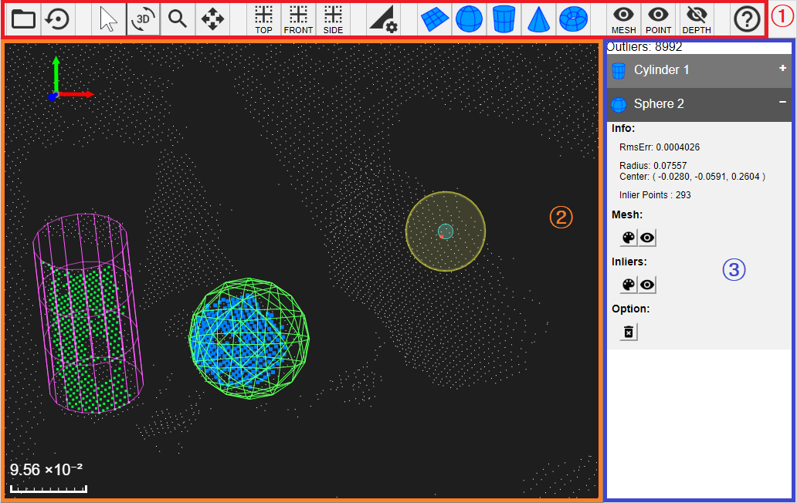
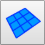
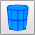
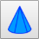

Interface of FindSurfaceWeb

| ① | Menu bar | Provides buttons to control FindSurfaceWeb's behavior. |
| ② | WebGL canvas | Visualizes point clouds and geometries. |
| ③ | Information panel | Prints geometries' information such as size, position, orientation. |
Buttons in the menu bar
Open Point Cloud Data
 |
Open | Opens a point cloud file. You may select one of the preset data, which our server provides, or choose your own file (.xyz or .obj) to upload it to the server. |
| Reset Scene | Removes all works done and initializes the point cloud. |
Manipulate the view
| Normal | Disables user mouse events on the WebGL canvas. | |
 |
Rotate | Enables user mouse events on the WebGL canvas, so you can drag your mouse cursor to rotate the point cloud. |
 |
Zoom | Enables user mouse events on the WebGL canvas, so you can drag your mouse cursor horizontally to zoom in/out the point cloud. |
 |
Move | Enables user mouse events on the WebGL canvas, so you can drag your mouse cursor to move the point cloud. |
 |
Top View | Sets the camera to the top view (the camera is located at a point on Y axis). |
| Front View | Sets the camera to the front view (the camera is located at a point on Z axis). | |
| Side View | Sets the camera to the side view (the camera is located at a point on X axis). |
Run FindSurface
 |
Setting Parameters | Adjusts FindSurface's parameters. |
|  | Find Plane | Sets FindSurface's target type to plane. |
 |
Find Sphere | Sets FindSurface's target type to sphere. |
|  | Find Cylinder | Sets FindSurface's target type to cylinder. |
|  | Find Cone | Sets FindSurface's target type to cone. |
 |
Find Torus | Sets FindSurface's target type to torus. |
ETC
| Info | Shows information about this web application. |
WebGL Canvas
| Unit Frame | (Top-Left side of screen) Visualizes the axes of reference frame in model-space coordinates. | |
| Ruler | (Bottom-Left side of screen) Provides a visual cue to help users to assume length of the object in a screen to estimate how long it is in a real life. | |
| Geometry mesh | A geometry model's mesh that is found by FindSurface. | |
| Geometry inlier points | The points that are included by a geometry model. |
Information Panel
This panel shows you geometry items that are found by FindSurface. Users can click an item to show the information of the item.
Item Actions
| Color Palette | Allows users to change the color of a geometry's mesh or inlier points. | |
| Visibility | Allows users to show/hide a geometry's mesh or inlier points. | |
 |
Remove | Allows users to remove the mesh and inlier points of a geometry. |